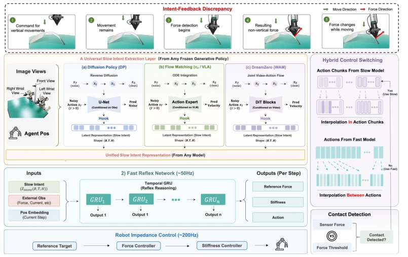
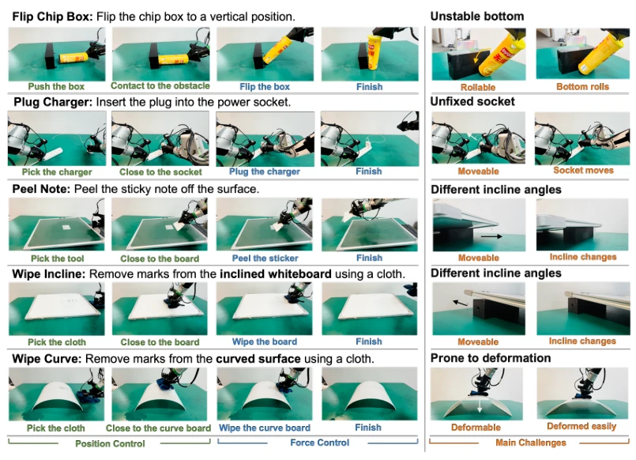
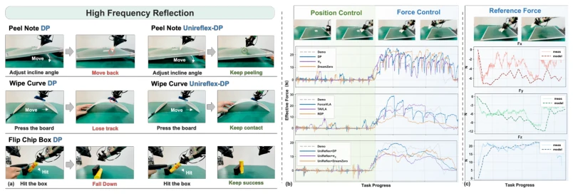

This paper attempts to forcibly install a "force control plugin" onto pre-trained generation policies (such as Diffusion Policy [1], VLA [2]), claiming to handle contact tasks without retraining. UniReflex is indeed clever, by Hooking the action head's latent space, inserting a fast reflex network, and implementing a fast-slow system. The benefit is obviously that the backend is frozen, training is fast, latency is low, achieving 25-66x acceleration. However, the drawbacks are also obvious: for long-horizon world models (such as DreamZero [4]), the improvement is limited, since chunk refresh is slow; for instantaneous impact tasks (such as plugging in a charger), the force control advantage is not obvious. Overall, it is a good engineering patch, but do not expect it to replace the generalization capability of end-to-end force control policies, after all the complexity of the physical world cannot be completely solved by a simple gating mechanism, especially when sensor noise is high.
研究动机Motivation
生成式模仿学习在轨迹规划上很强，但缺乏闭环力调节，导致接触任务（如擦拭、插入）不稳定。现有方法要么把力作为观测输入 [7, 8]，要么耦合混合力位控制 [9, 10]，要么用快慢分层 [11]。但问题在于，这些通常需要端到端训练或架构修改，对于已经预训练好的大模型，重训成本高且易破坏原有分布。UniReflex 想解决这个矛盾：如何在冻结 backbone 的情况下，独立赋予系统物理反射能力。这符合当前 Foundation Model 时代的需求，即复用预训练权重，仅微调适配模块，避免灾难性遗忘。
Generative imitation learning is strong in trajectory planning, but lacks closed-loop force regulation, leading to instability in contact tasks (such as wiping, insertion). Existing methods either treat force as observation input [7, 8], or couple hybrid force-position control [9, 10], or use fast-slow hierarchy [11]. However, the problem lies in that these usually require end-to-end training or architecture modification; for already pre-trained large models, retraining is costly and easily destroys the original distribution. UniReflex aims to resolve this contradiction: how to independently endow the system with physical reflex capability while freezing the backbone. This aligns with the needs of the current Foundation Model era, i.e., reusing pre-trained weights, only fine-tuning adaptation modules, and avoiding catastrophic forgetting.
The overall process is divided into three steps. First, non-invasively Hook the internal latent state z of the generation policy action head to extract slow intent. Second, train a lightweight fast reflex network (GRU), where the input includes slow intent, real-time feedback, and position embedding, and the output includes force reference F_ref, stiffness matrix Phi_K, and position residual x_reflex. The core innovation lies in anisotropic stiffness prediction and adaptive gating. The gating mechanism prioritizes position tracking before contact (Phase I), switches to force control dominance after contact (Phase II), and utilizes VIC to regulate impedance. This retains the geometric accuracy of the original strategy while adding contact stability. This method does not modify backbone weights, only trains the reflex module, achieving true Plug-and-Play, and supports heterogeneous policies.

Figure 1: System architecture of UniReflex. UniReflex hierarchically couples slow vision-driven planning, a fast proprioceptive reflex, and a real-time execution layer that tracks predicted reference forces together with reference-impedance targets.
Tested on 5 contact-rich tasks (wiping, peeling paper, plugging charger, etc.), with baselines including RDP [11], ForceVLA [8], etc. Metrics include success rate (Phase I/II) and force error. Results show that UniReflex improved success rate in Phase II by 20-60 percentage points, and force tracking error was significantly reduced. Ablation experiments prove that anisotropic stiffness and gating mechanism are crucial. In terms of training efficiency, backpropagation latency is reduced by 25-66 times, and parameter count accounts for only 0.188%-0.375% of the backbone. However, the improvement on DreamZero is small, and the effect on short-term impact tasks is limited, indicating that its scope of application still has boundaries.

Figure 2: Five contact-rich tasks: short per-task introductions and the main physical challenges, together with a two-stage evaluation protocol.

Figure 3: High-frequency reflex and force tracking: (a) UniReflex maintains success on contact- rich tasks under disturbances. (b) Effective force during the peel task for baselines vs. UniReflex. (c) Measured contact force vs. predicted reference force during UniReflex execution.